The instruments in this gallery are a sample of my bespoke builds — each one developed individually with the player.
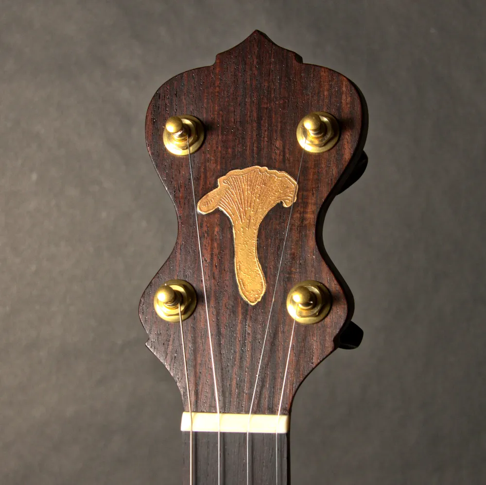
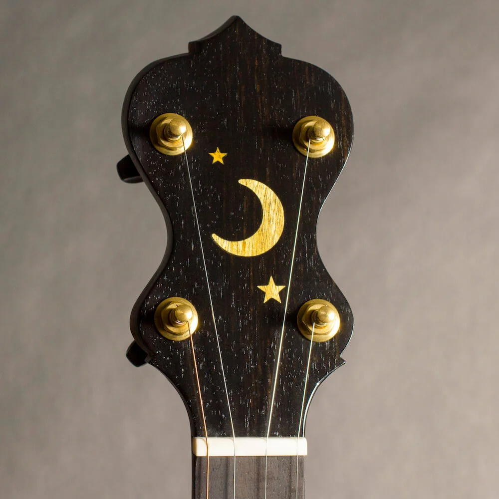
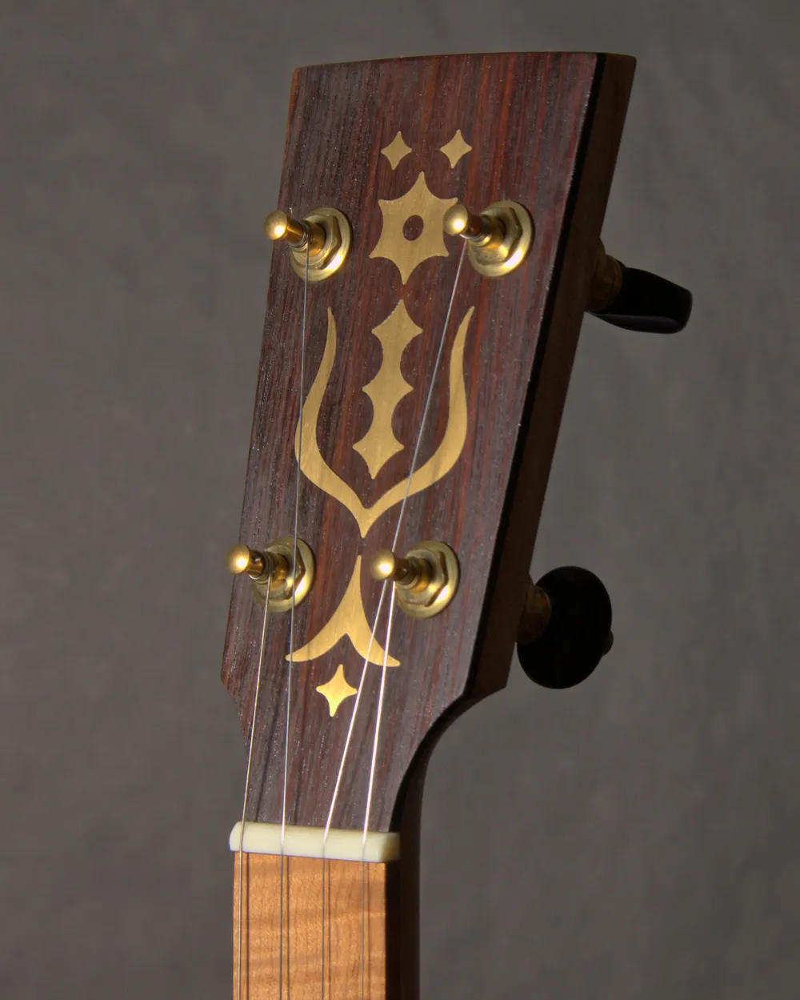
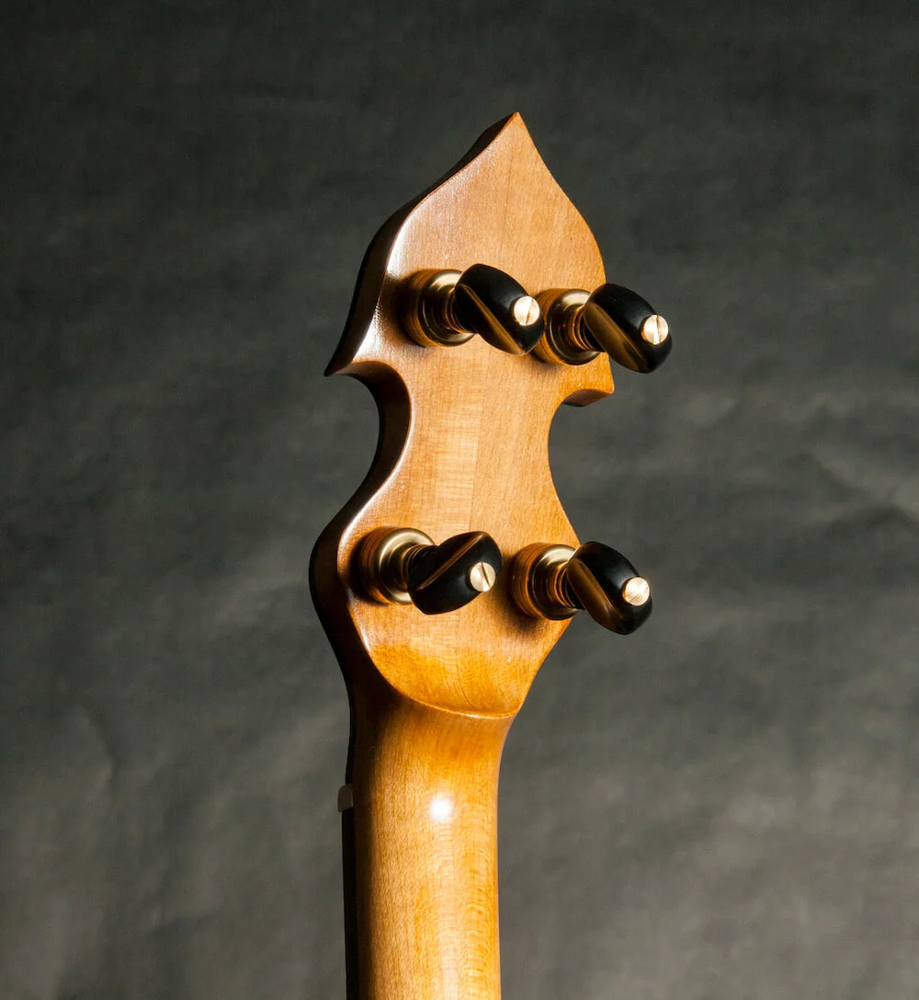
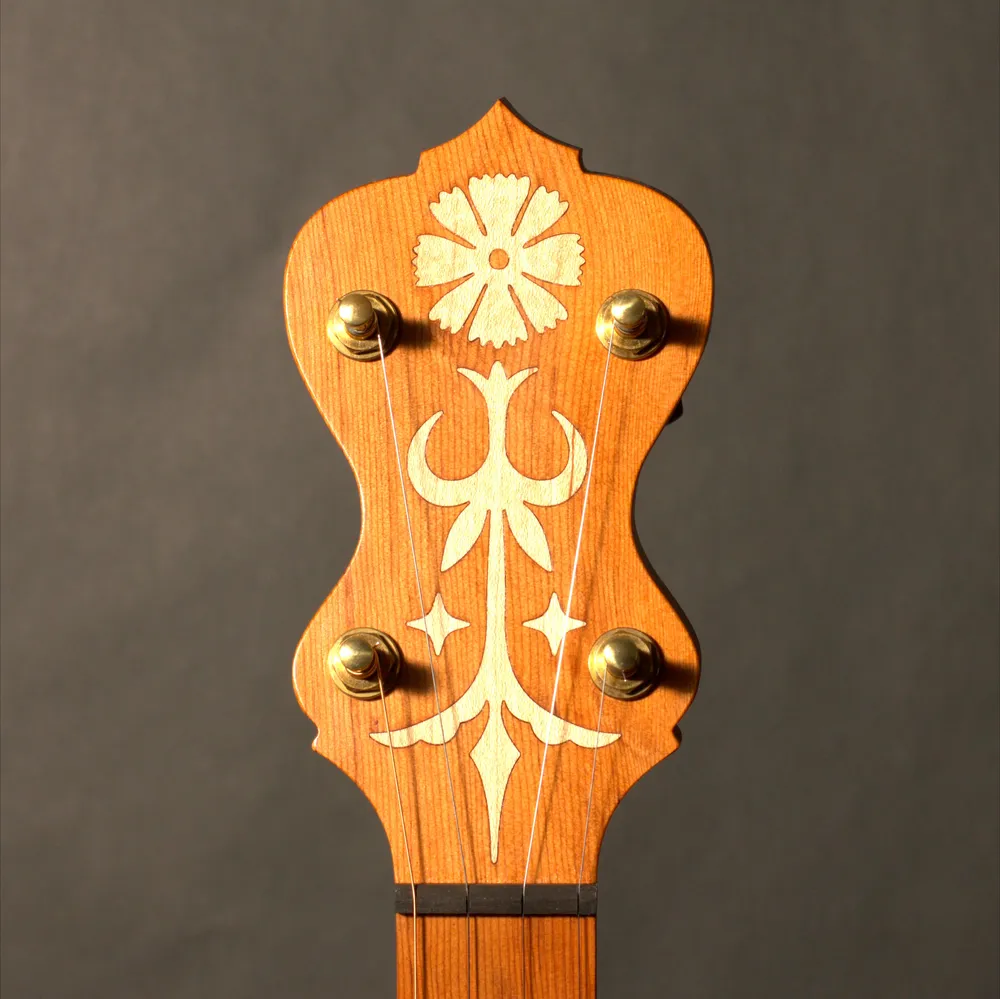
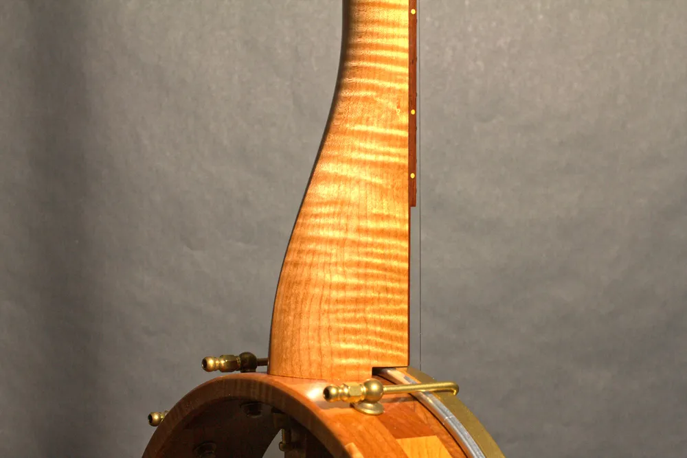
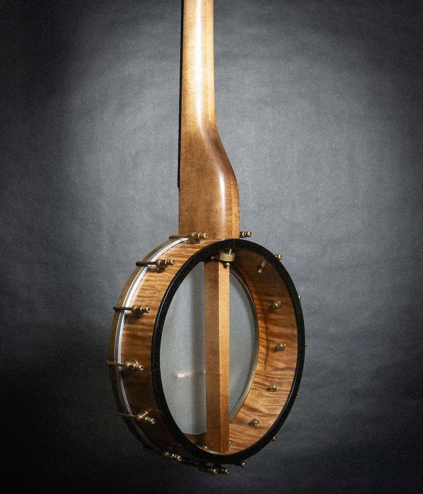
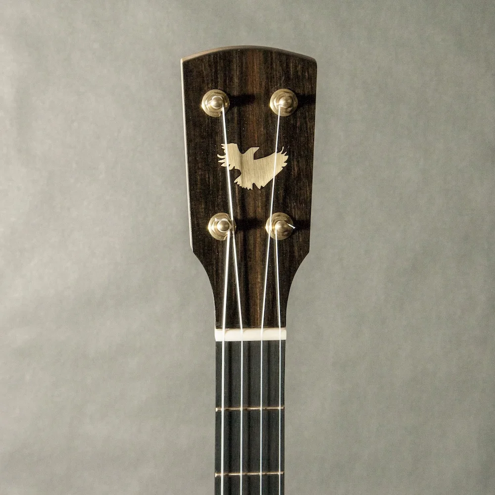
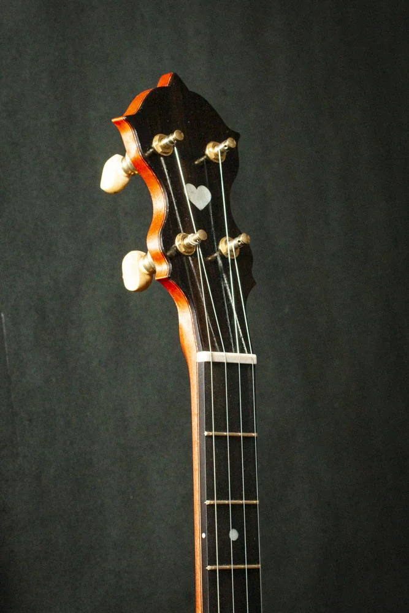
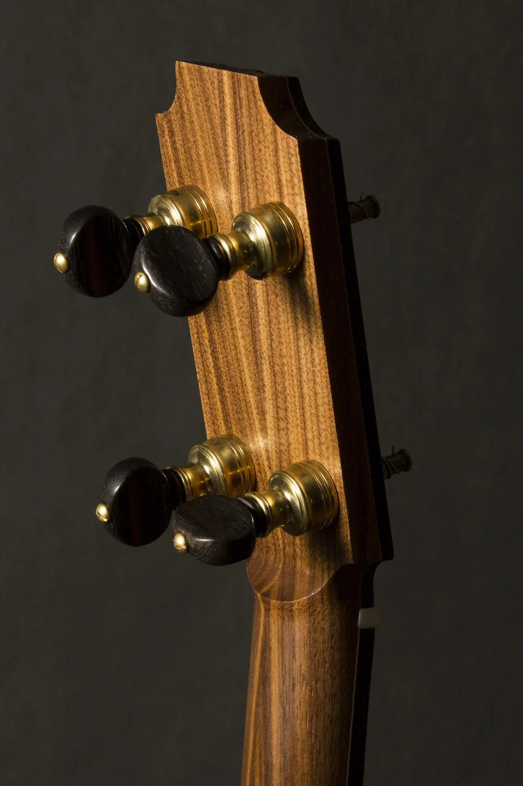
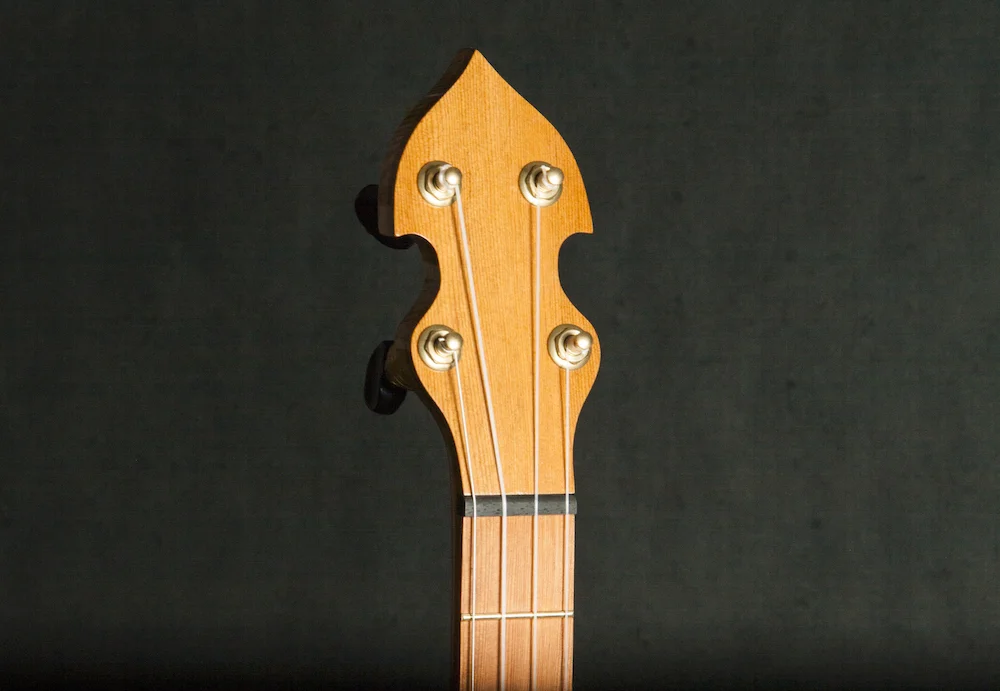
See something you like? Every one of these started as a conversation.
Get in touch